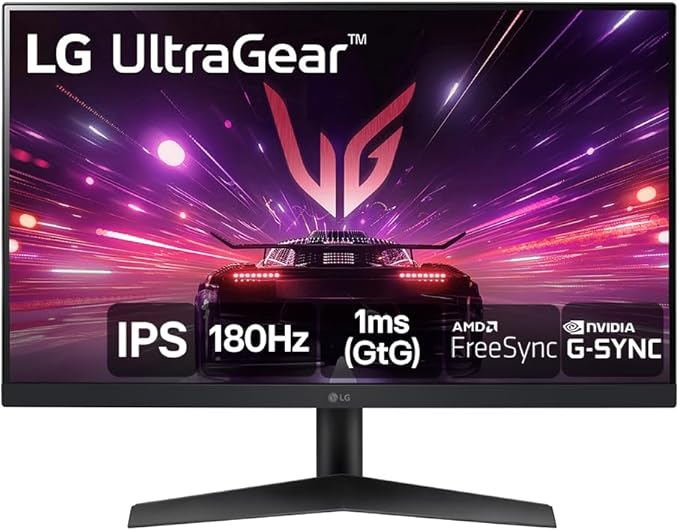

| Foto | Produto |
|---|---|
|

|
LG UltraGear 24GS60F-B. Os gamers sabem: todo frame importa! Usar um monitor da qualidade do LG UltraGear 24" 24GS60F-B 180Hz 1ms GtG NVIDIA G-SYNC AMD FreeSync faz diferença! 180Hz: a velocidade de 180Hz do Monitor Gamer LG UltraGear 24” 24GS60F-B NVIDIA G-SYNC AMD FreeSync vem para mudar o seu jogo e dar adeus ao input lag e ghosting! Adaptative Sync: o monitor Gamer LG UltraGear 24” 24GS60F-B possui a tecnologia compatível com NVIDIA G-SYNC e AMD FreeSync para combinar a taxa de atualização de 180Hz do monitor à taxa de quadros GPU de desktops e notebooks, para uma experiência de jogo fluído, rápido e sincronizado. 1ms(GtG): rapidez no jogo é crucial e o monitor UltraGear 24GS60F-B da LG tem o tempo real de resposta de apenas 1ms(GtG) para o Gamer realmente viver toda a emoção da Gameplay! Painel IPS FullHD: o monitor Gamer UltraGear 24GS60F-B da LG possui a tela IPS, que oferece imagens de alta qualidade e cores precisas, com ângulos de visão de até 178° para destacar a verdadeira emoção a cada jogo e deixar a experiência gamer ainda mais completa! HDR10 sRGB 99%: o monitor LG UltraGear 24GS60F-B conta com padrão HDR10 para destacar o conteúdo do game tanto em áreas escuras, como de brilho intenso sendo suportado pela incrível fidelidade de cores de 99% no padrão sRGB para os gamers não perderem nenhum detalhe do seu jogo favorito! 24 polegadas: o monitor Gamer LG UltraGear 24GS60F-B de 24" tem o tamanho ideal para a sua gamestation, tanto no setup com o Desktop PC, console ou Notebook! |
|
Preço |
R$ 899,00 |
| Em estoque: | 32 |